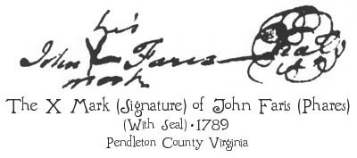
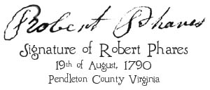

In Pendleton County Virginia law suit, John Pharis
vs. Peter Veneman, we see the Phares name
spelled three ways,
Phares,
Pharis, and
Faris. One original document is signed with an
X mark,
and the name John Faris was written in by another person.
It is reasonable to assume that John was illiterate and did not know how to spell his name,
and so the person who wrote the document simply spelled it phonetically; hence the spelling
Faris. One of the other of the original
documents is a deposition by Robert Phares. He is literate and so he properly signs a deposition with his name. Robert also mentions
his father in the deposition so there is no question that Robert Phares is the son of John “Faris.”


It is also reasonable to expect to see variations of Phares surname such as Pharis,
Faris, Farris, etc. Doing Phares research in early New Jersey records, the variations become appearent.
It was commonplace in early America for surnames to be misspelled and even changed. Often, the court
clerks receive the blame for this, but if the a person could not spell his own name, how is the clerk to know?
Source of the Phares Signatures:
Latter Day Saint’s Family History Centers Library system, Microfilm #186499, (see Envelope #3).